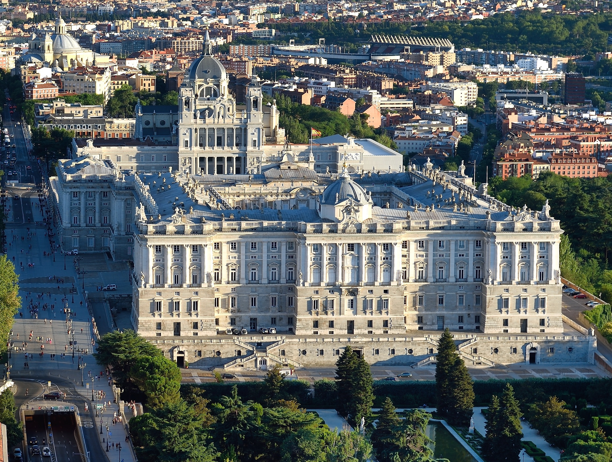
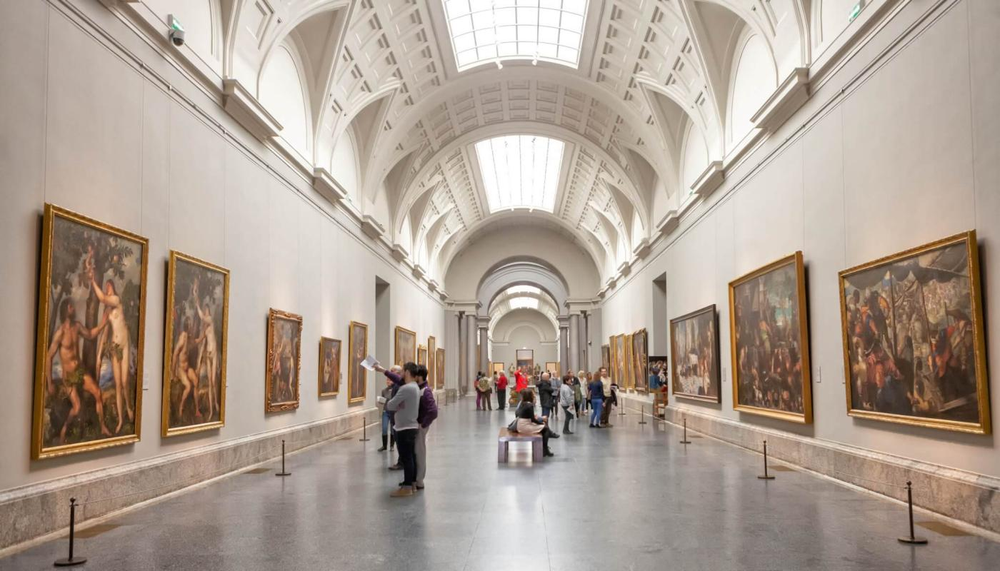
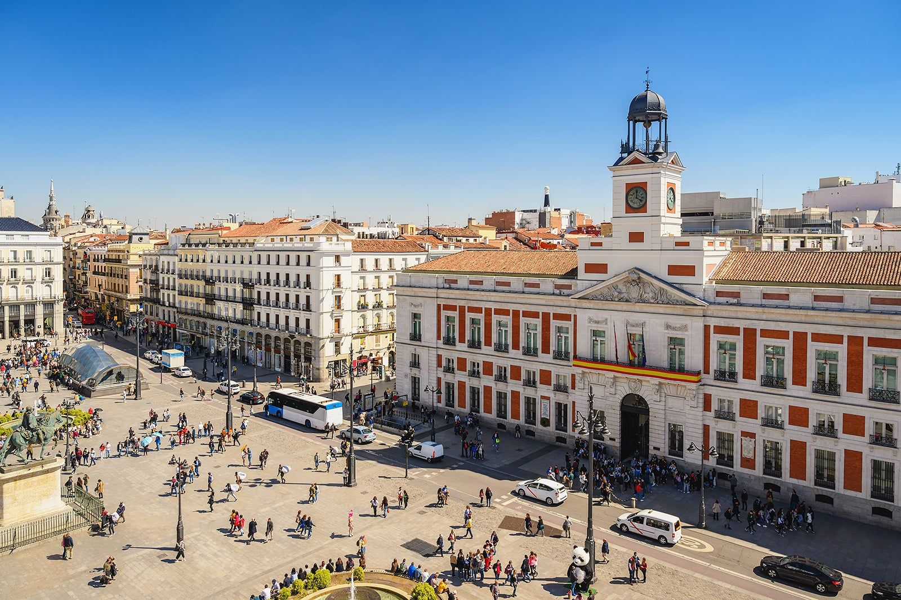
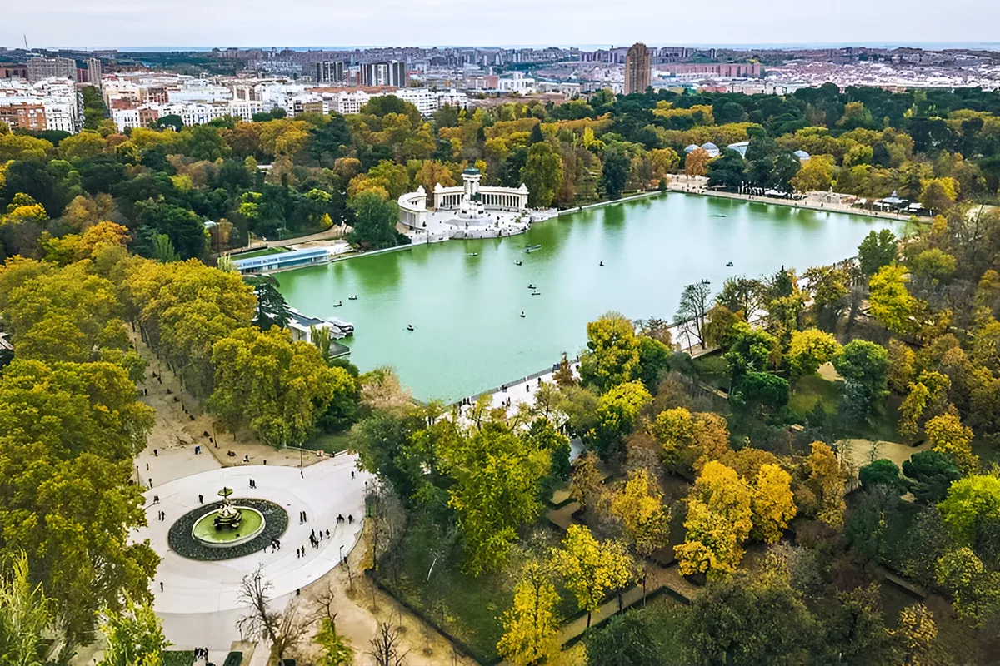

Royal Palace of Madrid

One of the largest palaces in Europe, known for its architecture, history, and royal collections.
Opening Hours: 10:00 AM - 6:00 PM
Entry Price: €10

One of the largest palaces in Europe, known for its architecture, history, and royal collections.
Opening Hours: 10:00 AM - 6:00 PM
Entry Price: €10

One of Spain's most famous museums, featuring works by Goya, Velázquez, and El Greco.
Opening Hours: 10:00 AM - 8:00 PM
Entry Price: €15

Madrid's central square and one of the city's busiest meeting points, known for the KM 0 marker.
Opening Hours: Open 24 hours
Entry Price: Free

A peaceful green space with gardens, monuments, walking paths, and a popular boating lake.
Opening Hours: 6:00 AM - 12:00 AM
Entry Price: Free